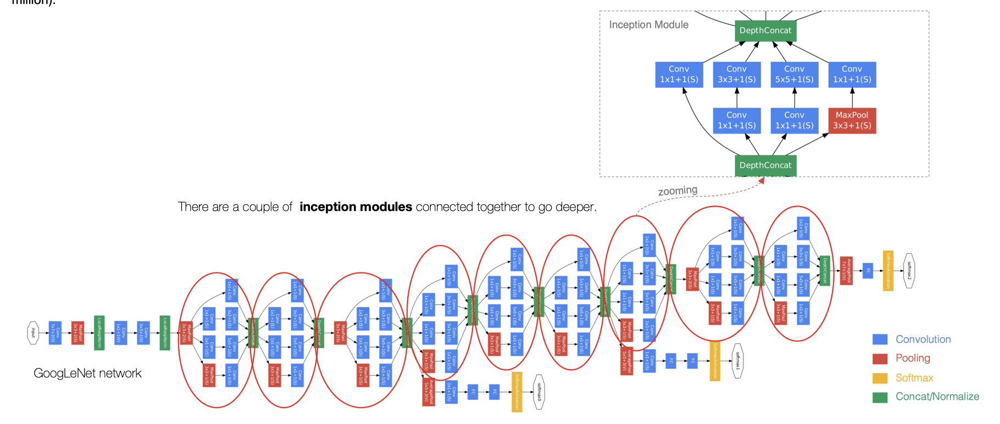
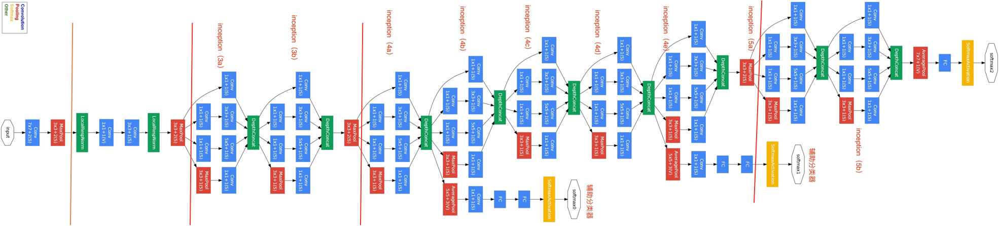
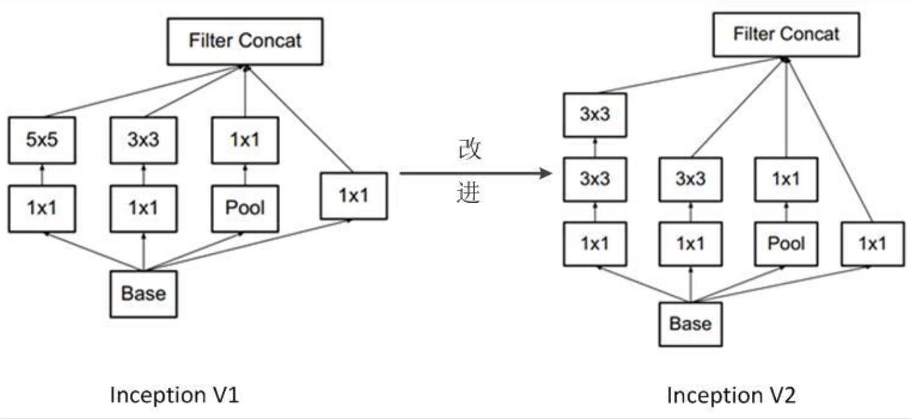

1.4 GoogLeNet¶
学习目标
- 知道GoogLeNet网络结构的特点
- 能够利用GoogLeNet完成图像分类

GoogLeNet的名字不是GoogleNet，而是GoogLeNet，这是为了致敬LeNet。GoogLeNet和AlexNet/VGGNet这类依靠加深网络结构的深度的思想不完全一样。GoogLeNet在加深度的同时做了结构上的创新，引入了一个叫做Inception的结构来代替之前的卷积加激活的经典组件。GoogLeNet在ImageNet分类比赛上的Top-5错误率降低到了6.7%。。
1.Inception 块¶
GoogLeNet中的基础卷积块叫作Inception块，得名于同名电影《盗梦空间》（Inception）。Inception块在结构比较复杂，如下图所示：

Inception块里有4条并行的线路。前3条线路使用窗口大小分别是1\times 1、3\times 3和5\times 5的卷积层来抽取不同空间尺寸下的信息，其中中间2个线路会对输入先做1\times 1卷积来减少输入通道数，以降低模型复杂度。第4条线路则使用3\times 3最大池化层，后接1\times 1卷积层来改变通道数。4条线路都使用了合适的填充来使输入与输出的高和宽一致。最后我们将每条线路的输出在通道维上连结,并向后进行传输。
1\times 1卷积：
它的计算方法和其他卷积核一样，唯一不同的是它的大小是1\times1，没有考虑在特征图局部信息之间的关系。

它的作用主要是：
-
实现跨通道的交互和信息整合
-
卷积核通道数的降维和升维，减少网络参数
2.GoogLeNet模型¶
GoogLeNet主要由Inception模块构成，如下图所示：

整个网络架构我们分为五个模块，每个模块之间使用步幅为2的3\times 3最大池化层来减小输出高宽。

- B1模块：使用一个64通道的7\times 7卷积层
- B2模块：使用2个卷积层：首先是64通道的1\times 1卷积层，然后是将通道增大3倍的3\times 3卷积层。
- B3模块：串联2个完整的Inception块, 分别是Inception3a和Inception3b
- B4模块：串联了5个Inception块，分别是Inception4a，Inception4b，Inception4c,Inception4d和Inception4e,并且在4b和4e模块添加了辅助输出端，用于模型训练
- B5模块：串联了2个Inception块，分别是Inception5a，Inception5b，后面紧跟输出层，该模块使用全局平均池化层（GAP）来将每个通道的高和宽变成1。最后输出变成二维数组后接输出个数为标签类别数的全连接层。
在这里构建模型我们依然使用pytorch中的封装的API来给大家构建网络：
# 导入相关的工具包
import torch
import torchvision.models as models
# 模型实例化
model = models.googlenet()
googLeNet的网络层数比较多，我们模块来看下它的网络结构（池化层没有展示出来）：
2.1 B1模块¶
model.conv1
model.maxpool1
结构如下所示：
BasicConv2d(
(conv): Conv2d(3, 64, kernel_size=(7, 7), stride=(2, 2), padding=(3, 3), bias=False)
(bn): BatchNorm2d(64, eps=0.001, momentum=0.1, affine=True, track_running_stats=True)
)
(maxpool1): MaxPool2d(kernel_size=3, stride=2, padding=0, dilation=1, ceil_mode=True)
2.2 B2模块¶
B2模块是使用2个卷积层+一个池化层
model.conv2
model.conv3
model.maxpool2
模型结构如下所示：
(conv2): BasicConv2d(
(conv): Conv2d(64, 64, kernel_size=(1, 1), stride=(1, 1), bias=False)
(bn): BatchNorm2d(64, eps=0.001, momentum=0.1, affine=True, track_running_stats=True)
)
(conv3): BasicConv2d(
(conv): Conv2d(64, 192, kernel_size=(3, 3), stride=(1, 1), padding=(1, 1), bias=False)
(bn): BatchNorm2d(192, eps=0.001, momentum=0.1, affine=True, track_running_stats=True)
)
(maxpool2): MaxPool2d(kernel_size=3, stride=2, padding=0, dilation=1, ceil_mode=True)
2.3 B3模块¶
B3模块串联2个完整的Inception块，我们以其中Inception3a为例，给大家展示下结构：
model.inception3a
模型结构如下所示：
Inception(
(branch1): BasicConv2d(
(conv): Conv2d(192, 64, kernel_size=(1, 1), stride=(1, 1), bias=False)
(bn): BatchNorm2d(64, eps=0.001, momentum=0.1, affine=True, track_running_stats=True)
)
(branch2): Sequential(
(0): BasicConv2d(
(conv): Conv2d(192, 96, kernel_size=(1, 1), stride=(1, 1), bias=False)
(bn): BatchNorm2d(96, eps=0.001, momentum=0.1, affine=True, track_running_stats=True)
)
(1): BasicConv2d(
(conv): Conv2d(96, 128, kernel_size=(3, 3), stride=(1, 1), padding=(1, 1), bias=False)
(bn): BatchNorm2d(128, eps=0.001, momentum=0.1, affine=True, track_running_stats=True)
)
)
(branch3): Sequential(
(0): BasicConv2d(
(conv): Conv2d(192, 16, kernel_size=(1, 1), stride=(1, 1), bias=False)
(bn): BatchNorm2d(16, eps=0.001, momentum=0.1, affine=True, track_running_stats=True)
)
(1): BasicConv2d(
(conv): Conv2d(16, 32, kernel_size=(3, 3), stride=(1, 1), padding=(1, 1), bias=False)
(bn): BatchNorm2d(32, eps=0.001, momentum=0.1, affine=True, track_running_stats=True)
)
)
(branch4): Sequential(
(0): MaxPool2d(kernel_size=3, stride=1, padding=1, dilation=1, ceil_mode=True)
(1): BasicConv2d(
(conv): Conv2d(192, 32, kernel_size=(1, 1), stride=(1, 1), bias=False)
(bn): BatchNorm2d(32, eps=0.001, momentum=0.1, affine=True, track_running_stats=True)
)
)
)
2.4 B4模块¶
B4模块串联了5个Inception块，与B3模块是类似的，在这里我们就不在赘述了。B4模块还有一个特点是在4b和4e模块添加了辅助输出端，用于模型训练，我们来给大家看下辅助输出端的结构：

我们以4b模块的辅助输出端为例:
model.aux1
输出端的结构如下所示：
InceptionAux(
(conv): BasicConv2d(
(conv): Conv2d(512, 128, kernel_size=(1, 1), stride=(1, 1), bias=False)
(bn): BatchNorm2d(128, eps=0.001, momentum=0.1, affine=True, track_running_stats=True)
)
(fc1): Linear(in_features=2048, out_features=1024, bias=True)
(fc2): Linear(in_features=1024, out_features=1000, bias=True)
)
2.5 B5模块¶
B5串联了2个Inception块，后面紧跟输出层，该模块使用全局平均池化层（GAP）来将每个通道的高和宽变成1。最后输出变成二维数组后接输出个数为标签类别数的全连接层。其结构如下所示：
(avgpool): AdaptiveAvgPool2d(output_size=(1, 1))
(dropout): Dropout(p=0.2, inplace=False)
(fc): Linear(in_features=1024, out_features=1000, bias=True)
3.鲜花类别识别案例¶
因为ImageNet数据集较大训练时间较长，我们使用前面的介绍的鲜花分类数据集来演示GoogLeNet。读取数据的时将图像高和宽扩大到GoogLeNet使用的图像高和宽224。
2.1 数据读取¶
首先获取数据,为了适应GoogLeNet对输入数据尺寸的要求，将图像大小调整到224x224的大小，并使用DataLoader进行批次数据的读取：
from torchvision import transforms
from torch.utils.data import DataLoader
from torchvision.datasets import ImageFolder
# 指定批次大小
batch_size = 2
# 指定数据集路径
flower_train_path = './dataset/flower_datas/train/'
flower_test_path = './dataset/flower_datas/val/'
# 先将数据转换为tensor类型，并调整数据的大小为224x224
dataset_transform = transforms.Compose(
[transforms.ToTensor(),
transforms.Resize((224, 224))])
# 获取训练集数据和测试集数据
flower_train = ImageFolder(flower_train_path, transform=dataset_transform)
flower_test = ImageFolder(flower_test_path, transform=dataset_transform)
# 获取数据的迭代
train_loader = DataLoader(dataset=flower_train,
batch_size=batch_size,
shuffle=True)
test_loader = DataLoader(dataset=flower_test,
batch_size=batch_size,
shuffle=False)
为了让大家更好的理解，我们将batch数据展示出来：
import matplotlib.pyplot as plt
# 遍历每个迭代的数据，将其结果展示出来
for b, (imgs, targets) in enumerate(train_loader):
# 获取第一个batch的图像
if b == 1:
# 将其进行展示
fig, axes = plt.subplots(1, 2)
# 遍历batch中的每个图像
for i in range(batch_size):
# 图像显示出来
axes[i].imshow(imgs[i].permute(1, 2, 0))
# 设置图像标题
axes[i].set_title(targets[i].item())
plt.show()
elif b > 1:
break
结果为：
我们就使用上述创建的模型进行训练和评估。
2.2 模型实例化和参数设置¶
# 模型实例化:输入数据3通道，进行5类的分类处理
model = models.googlenet(num_classes=5)
# 模型训练的参数设置
# 学习率
learning_rate = 1e-3
# 训练轮数
num_epochs = 10
# 优化算法Adam = RMSProp + Momentum
optimizer = torch.optim.Adam(model.parameters(), lr=learning_rate)
# 交叉熵损失函数
loss_fn = torch.nn.CrossEntropyLoss()
2.3 模型评估方法¶
在这里我们定义一个方法对模型的效果进行评估，计算预测正确的样本数占总样本的比例：
# 计算模型预测精度:测试集数据，模型
def evaluate_accuracy(data_iter, model):
total = 0
correct = 0
# 不进行梯度计算
with torch.no_grad():
# 模型是验证模式
model.eval()
# 获取每一个batch的数据，进行预测
for images, labels in data_iter:
# google进行模型预测时只返回最终的结果
outputs = model(images)
# 获取预测结果
_, predicts = torch.max(outputs.data, dim=1)
# 预测的次数
total += labels.size(0)
# 预测正确的个数
correct += (predicts == labels).cpu().sum()
break
# 获取准确率
return correct / total
2.4 模型训练¶
定义模型训练方法，遍历每个轮次，每个batch的数据，进行模型训练，并评估模型的效果。与其他网络不同的是，GoogLeNet进行训练时其损失函数的需要将两个辅助输出的结果联合在一起，进行反向传播，更新参数，完成模型训练。具体实现如下所示：
## 定义模型训练过程:指定数据集，优化器，损失函数和轮次
def train(data_loader=train_loader,
optimizer=optimizer,
loss_fn=loss_fn,
epochs=num_epochs):
# 遍历每一个轮次进行训练
for epoch in range(epochs):
print('current epoch = {}'.format(epoch))
# 每一个轮次的损失，预测个数和预测正确个数的初始化
train_accuracy_total = 0
train_correct = 0
# 迭代次数
train_loss_sum = 0
iter = 0
for i, (images, labels) in enumerate(data_loader):
# 模型定义为训练模式
model.train()
# 对数据进行预测
outputs,aux2,aux1 = model(images)
# 各个输出端的损失
loss0 = loss_fn(outputs, labels)
loss1 = loss_fn(aux1,labels)
loss2 = loss_fn(aux2,labels)
# 计算模型的损失
loss = loss0 + 0.3*loss2+0.2*loss2
# 在做反向传播前先清除网络状态
optimizer.zero_grad()
# 损失值进行反向传播
loss.backward()
# 参数迭代更新
optimizer.step()
# 求损失的和
train_loss_sum += loss.item()
# 输出模型预测结果
_, predicts = torch.max(outputs.data, dim=1)
# 获取训练集预测正确的个数
train_accuracy_total += labels.size(0)
train_correct += (predicts == labels).cpu().sum().item()
# 迭代次数增1
iter += 1
# 测试集预测的准确率
test_acc = evaluate_accuracy(test_loader, model)
print(
'epoch:{0}, loss:{1:.4f}, train accuracy:{2:.3f}, test accuracy:{3:.3f}'
.format(epoch, train_loss_sum / (iter + 0.01),
train_correct / train_accuracy_total, test_acc))
print('------------finish training-------------')
调用train方法便可完成网络的训练：
train()
训练过程如下所示：
current epoch = 0
epoch:0, loss:2.1413, train accuracy:0.376, test accuracy:0.464
time:4032.8075881004333
current epoch = 1
epoch:1, loss:1.8748, train accuracy:0.516, test accuracy:0.527
time:3051.2406339645386
current epoch = 2
epoch:2, loss:1.7072, train accuracy:0.567, test accuracy:0.602
time:3016.887406349182
current epoch = 3
epoch:3, loss:1.6060, train accuracy:0.591, test accuracy:0.637
time:1945.9554996490479
current epoch = 4
epoch:4, loss:1.5428, train accuracy:0.607, test accuracy:0.624
time:1256.7433443069458
current epoch = 5
epoch:5, loss:1.4887, train accuracy:0.617, test accuracy:0.637
time:1256.3489837646484
current epoch = 6
epoch:6, loss:1.4481, train accuracy:0.629, test accuracy:0.621
time:1246.721872329712
current epoch = 7
epoch:7, loss:1.3597, train accuracy:0.662, test accuracy:0.629
time:439.1858534812927
current epoch = 8
epoch:8, loss:1.3338, train accuracy:0.668, test accuracy:0.659
time:440.5386116504669
current epoch = 9
epoch:9, loss:1.3054, train accuracy:0.669, test accuracy:0.687
time:441.2357189655304
------------finish training-------------
我又设置训练轮次为100，batchsize设置为16对模型进行训练，训练结果如下所示：(左图是损失函数的变化曲线，右图是验证集准确率的变化曲线)
从图中可以看出，GoogleNet的拟合能力非常强，验证集的准确率能达到0.85以上。
4.延伸版本¶
GoogLeNet是以InceptionV1为基础进行构建的，所以GoogLeNet也叫做InceptionNet,在随后的⼏年⾥，研究⼈员对GoogLeNet进⾏了数次改进， 就又产生了InceptionV2，V3,V4等版本。
4.1 InceptionV2¶
在InceptionV2中将大卷积核拆分为小卷积核，将V1中的5\times 5的卷积用两个3\times 3的卷积替代，从而增加网络的深度，减少了参数。

4.2 InceptionV3¶
将n×n卷积分割为1×n和n×1两个卷积，例如，一个的3\times3卷积首先执行一个1\times3的卷积，然后执行一个3\times1的卷积,这种方法的参数量和计算量都比原来降低。

总结
- 知道GoogLeNet的网络架构：有基础模块Inception构成
- 能够利用GoogleNet完成图像分类